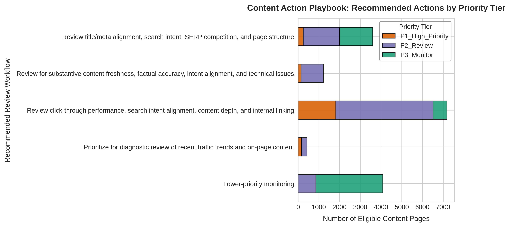
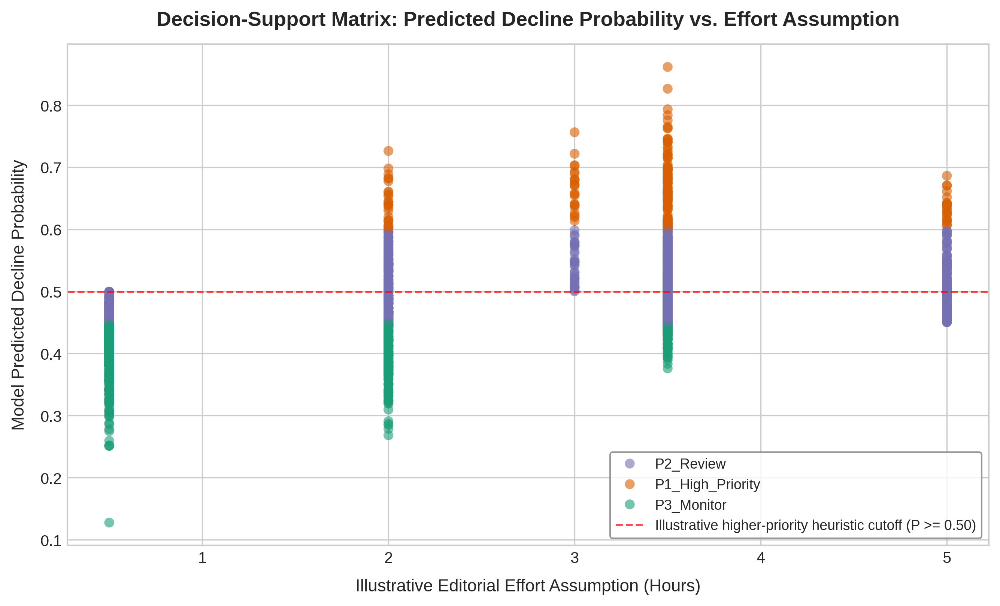

A machine learning engineering investigation into whether historical search-performance signals can help editors decide which published pages to review first.
This investigation evaluates whether historical search-performance signals can improve on FlyRank's existing hand-written flag system for prioritizing published pages for human review of organic traffic decay. Using 16,513 eligible pages across 36 client domains, I compared a transparent heuristic baseline with a standardized 9-feature Logistic Regression under client-grouped validation. On the primary Seed 42 split, Precision@50 increased from 20.0% to 24.0%, identifying 12 true declining pages among the top 50 compared with 10 from the baseline. Across five client splits, mean lift was +1.6 percentage points, with observed lifts ranging from -12.0 to +14.0 pp. Exploratory trajectory features produced a 74.0% single-split result, but this fell to a 54.8% ± 10.6% five-seed mean and was therefore not selected as the final result. A controlled leakage test further demonstrated the sensitivity of evaluation to future information.
Enterprise digital publishing teams manage thousands of published URLs, but editorial review bandwidth is strictly limited. Editors cannot investigate every page with equal depth.
The goal is not to automatically alter search settings or generate unreviewed copy. The goal is to rank pages so human editorial teams can decide where to direct diagnostic attention first.
This gap already exists inside FlyRank's own product. FlyRank's platform ships hand-written flags today — a health score, quick-win tags, needs-attention markers — each built from thresholds someone chose by hand. They work, and they run in production. But fixed rules run out once signals multiply and start moving together across a large client portfolio, and no trained model has replaced them yet. This capstone tests whether a learned model can close that specific gap for one decision: which pages to route into editorial review first.
This establishes a decision-support system, not an autonomous SEO system.
The analysis queries FlyRank's hosted warehouse release (hf://datasets/FlyRank/internship-warehouse,
build v20260703) via DuckDB, drawing from the fact_content_daily_performance table —
79M+ rows of production search-performance data spanning January 27, 2025 to June 30, 2026 across 70 clients.
After eligibility filtering (below), the analysis cohort contained 16,513 eligible pages across 36 clients.
Feature window: Feb 1 – Apr 30, 2026 (pre-May
historical aggregation)
Target window: May 1 – 31, 2026 (strictly isolated
forward outcome period)
Overlap: zero — all 9 production features are
constructed strictly from pre-May data.
To filter out newly launched or unindexed pages with volatile search noise, two volume thresholds were
applied:
1. GSC Impressions (Feb–Apr) ≥ 1,000
2. GSC Clicks (Apr) ≥ 10
This eligibility filter is why 79M+ raw rows become 16,513 analysis-ready pages — the vast majority of excluded rows are page-day observations from pages with too little search volume to produce a stable signal, not a sampling shortcut.
Public safety: client and content identifiers are pseudonymized hashes used only for grouping, joins, and deterministic ranking. Zero raw URLs, private search queries, or client domain names appear anywhere in this analysis.
Machine learning adds maintenance complexity and failure modes. I followed a structured 7-stage engineering investigation to verify whether added complexity earned its keep:
Prioritize URLs to direct finite editorial diagnostic bandwidth.
Audit search visibility, clicks, rankings, and user engagement.
Construct a transparent, non-learned 3-signal heuristic rule.
Train linear and tree-based classifiers on pre-May signals.
Run client-grouped holdouts to see if gains survive across domains.
Stress-test validation integrity via intentional future leakage.
Map scores to review archetypes with anti-automation guardrails.
I didn't stop at the first result that looked good. I tested alternative feature representations, checked whether high single-split scores held up across seeds, and stress-tested the evaluation framework:
An exploratory Logistic Regression using 13 velocity trajectory features (ratios, deltas, acceleration) reached 74.0% Precision@50 (37 of the top 50 pages) on Seed 42. That result looked promising, but it was not stable enough to become the final capstone model.
Across five seeds, the same trajectory Logistic Regression averaged 54.8% ± 10.6% Precision@50 (ranging from 44.0% to 74.0%).
The Engineering Decision: Because the score varied substantially by split, I kept it as an exploratory finding rather than presenting 74% as a stable model result.
An exploratory Random Forest (200 trees) evaluated on the 13 trajectory features achieved 60.0% Precision@50 (30/50 true positives) on Seed 42.
Across five seeds (42, 123, 2026, 7, 99), Random Forest demonstrated lower variance, averaging 57.6% ± 9.3% (ranging from 42.0% to 70.0%).
The Engineering Takeaway: The Random Forest result was more stable than the single-split Logistic Regression peak, but it still varied across client splits. This reinforced the need to evaluate the feature representation and model together across multiple seeds.
To test whether the validation pipeline catches temporal errors, I injected post-April May 2026 search clicks directly into the feature set.
Clean Model: 0.2400 P@50 (AUC 0.4594)
May Injected: 1.0000 P@50 (AUC 0.8921)
The Finding: The artificial jump to perfection demonstrated how future data can distort evaluation, reinforcing why the final pipeline uses strict pre-May temporal quarantine.
In work/personal_investigations/ml08_modeling_investigation.ipynb, multiple model families were
evaluated on the same 13 trajectory features under the Seed 42 held-out test split:
| Model Architecture | Feature Set | Precision@50 (Seed 42) | 5-Seed Mean ± Std | Status |
|---|---|---|---|---|
| Logistic Regression | Trajectory (13 features) | 0.7400 (37/50) | 0.5480 ± 0.1063 | Exploratory Peak |
| Random Forest (200 trees) | Trajectory (13 features) | 0.6000 (30/50) | 0.5760 ± 0.0933 | Exploratory |
| HistGradientBoosting | Trajectory (13 features) | 0.5400 (27/50) | — | Exploratory |
| Decision Tree (depth=6) | Trajectory (13 features) | 0.4800 (24/50) | 0.4400 ± 0.1220 | Exploratory |
| Extra Trees (200 trees) | Trajectory (13 features) | 0.4600 (23/50) | — | Exploratory |
| Gradient Boosting | Trajectory (13 features) | 0.4600 (23/50) | — | Exploratory |
*All exploratory trajectory models were evaluated on monthly-aggregate grain. The final capstone model relies on the standardized 9-feature pre-May pipeline for locked reproducibility.
To establish an interpretable benchmark, I built a non-learned heuristic baseline from three April signals: GSC impressions, average search position, and GA4 pageviews. Each signal was converted into a daily binary threshold flag (impressions ≥ 10, position > 10, pageviews ≥ 1) and aggregated into a page-level score.
Did ML beat a transparent rule? Yes, on the primary client-held-out test set (Seed 42): the 9-feature standardized Logistic Regression identified 12 true declining pages in the top 50 instead of 10 (+4.0 percentage-point lift).
Test-set base rate: 38.7% of held-out pages met the decay label in May (the full eligible portfolio's base rate is 41.6%). Because the task is top-50 candidate ranking for human editorial audit, the relevant comparison is how many true positives appear in the prioritized queue (Precision@50), rather than whether the percentage exceeds overall portfolio prevalence.
The baseline score averages daily April flags per page:
Daily Score = 1{gsc_impr ≥ 10} + 1{gsc_pos > 10} + 1{ga4_pv ≥ 1}
Deterministic tie-breaking: Score DESC → April Impr DESC → April PV DESC → Position ASC → content_hash_id ASC.
Client-grouped validation was used because pages from the same client can share domain-specific taxonomy and
authority patterns that a random row-level split would not test as strictly. Using GroupShuffleSplit (28 training clients → Model, 8 held-out clients → Evaluation)
across 5 repeated splits exposed substantial partition sensitivity:
The model does not consistently beat the baseline — it wins on 3 of 5 client partitions and loses on 2.
The model improved in 3 of 5 splits and underperformed in 2. The primary +4.0 pp lift is meaningful evidence on that split, but repeated validation showed that performance varies across client portfolios.
• Baseline 5-Split Mean: 0.3240 ± 0.2165
• LR Model 5-Split Mean: 0.3400 ± 0.1114
• Mean Split Lift: +0.0160 ± 0.1126
(+1.6 pp)
• Observed Lift Range: -12.0 pp to +14.0 pp
To test whether the validation framework detects subtle leakage, I ran an intentional stress test injecting post-April (May 2026) search clicks into the feature set:
Injecting future clicks produced a perfect 1.0000 Precision@50 in the controlled leakage test (ROC-AUC rose from 0.4594 to 0.8921). The score improved because future information entered the features, not because the model became better — which is exactly why the final pipeline uses strict pre-May temporal quarantine.
Pre-May features
↓
Model
↓
May outcome
↓
0.2400 P@50
Pre-May features + May clicks
↓
Model
↓
May outcome
↓
1.0000 P@50
The model ranks pages by estimated probability of the observed decay label, using historical pre-May signals. The resulting ranking is intended to prioritize human diagnostic review — not to establish that a page will actually recover traffic after intervention.
• Ranks URLs by predicted decline probability
• Groups pages into structured diagnostic archetypes
• Highlights high-volume and striking-distance candidates
• Rewrite page copy or generate autonomous text
• Execute programmatic 301 redirects or canonical tags
• Automatically delete or prune URLs
The ML-10 Action Playbook maps predicted probabilities into 5 review archetypes and priority tiers across the 16,513-page portfolio.
• High Search Impr / Thin Traffic: 7,181 pages (43.5%) · ~3.5h
• Lower-Priority Monitoring: 4,084 pages (24.7%) · ~0.5h
• Striking Distance / Search Visibility: 3,603 pages (21.8%) · ~2.0h
• High Traffic / Higher Decay Risk: 1,216 pages (7.4%) · ~5.0h
• General Higher-Decline Risk: 429 pages (2.6%) · ~3.0h
• P1_High_Priority (P ≥ 0.60): 2,373 pages (8,063.5h)
• P2_Review (0.45 ≤ P < 0.60): 8,655 pages
• P3_Monitor (P < 0.45): 5,485 pages
• Senior Review Queue (P ≥ 0.70): 272 pages


*Scoring across the 16,513-page portfolio uses in-sample predicted probabilities for triage illustration — these are not calibrated out-of-sample estimates. Effort hours (166.5h Top-50 / 41,748.5h Total) are planning heuristics, not accounting costs.
Rigorous machine learning engineering is defined by testing assumptions against empirical reality:
In this investigation, the simpler final model produced a more conservative result than earlier exploratory models, while repeated client-grouped validation showed that even the final lift was partition-sensitive.
Client-grouped validation was used because pages from the same client can share domain-specific patterns that a random row-level split would not test as strictly.
Injecting post-decision clicks produced a perfect 1.0000 Precision@50 in this stress test, showing why temporal feature quarantine matters.
The result supports using the model as a candidate-ranking experiment for human review, rather than as an autonomous decision system.
Scores prioritize human diagnostic review. They do not trigger rewriting, redirects, canonical changes, deletion, or other autonomous CMS actions.
• Partition sensitivity: Lift varied between -12.0 pp and +14.0 pp across client
partitions.
• Not causal: Statistical associations do not establish that refreshing a page will recover
traffic.
• Top-50 metric focus: Precision@50 evaluates the top triage queue, not full-portfolio
calibration.
• In-sample playbook queue: Full-portfolio scores are generated in-sample for decision
triage illustration.
The core metrics and analysis results can be traced to the repository notebooks and supporting artifacts:
| Feature Name | Standardized Coef. | Directional Association |
|---|---|---|
log_ga4_pageviews_feb_apr |
-0.9394 | Higher traffic associates with lower relative decay risk |
ga4_data_available |
+0.7060 | Active tracking configuration indicator |
gsc_avg_position_apr |
+0.3212 | Lower ranking (higher position #) associates with decay |
log_gsc_clicks_apr |
+0.2807 | April search click volume indicator |
client_has_ga4 |
-0.1751 | Client-level platform configuration flag |
log_ga4_engaged_sessions_feb_apr |
+0.0446 | Engagement session volume |
log_gsc_impressions_feb_apr |
-0.0231 | Broad search appearance volume |
client_has_gsc |
+0.0000 | Constant in eligible cohort (100%) |
gsc_data_available |
+0.0000 | Constant in eligible cohort (100%) |
*Coefficients reflect statistical associations in the training set, not causal mechanisms.